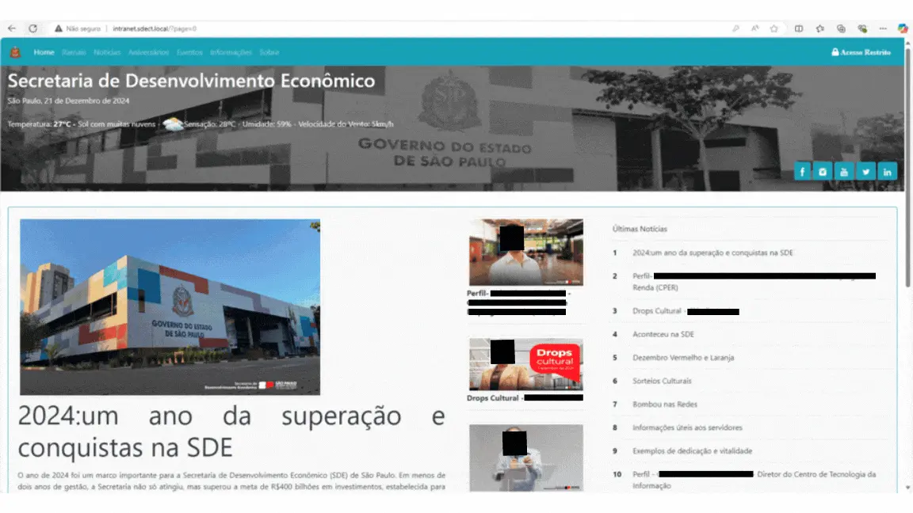
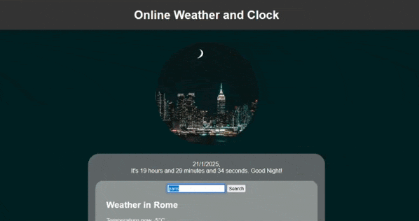
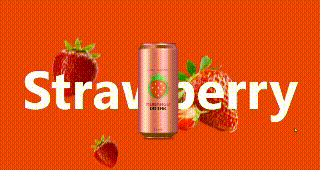
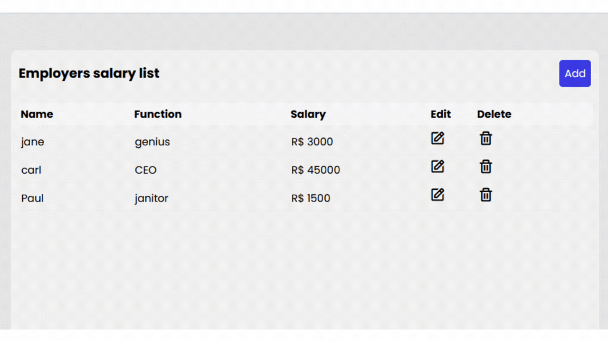
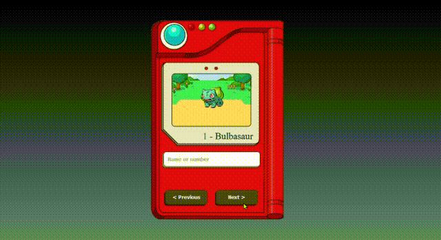
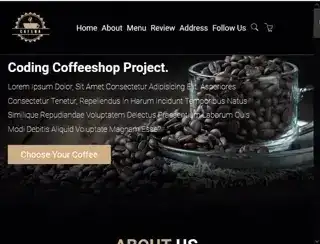

Jazão's Portfolio
Freelance projects
Click the button to explore the freelance projects I’ve worked on and other personal projects I’ve successfully sold. Here, you’ll find details about how I turned ideas into reality, helping clients and showcasing my dedication and creative skills.
Practical tester Quality Analyst
This was an electronic game for the visually impaired made with the unity engine. I was part of the team testing the game, searching for bugs and issues with the audio direction and volume that guide the player through the gameplay. The game is no longer available, but you can check the gameplay in portuguese in the link below. The game was produced in partnership with the government of the state of São Paulo through PROAC.
Asfalto’s videos:
https://www.youtube.com/watch?v=LRIzo_MT2z0
https://www.youtube.com/watch?v=Ryr22ZZwKHoInventory and Stock App
IN DEVELOPMENT: An app using JavaScript and SQL to manage the stock and inventory for the CTI at the Secretaria do Desenvolvimento do Estado de São Paulo, a governmental bureau where I work. The app will operate on a private IP, allowing access only to authorized users. It features a login area and can manage items (CRUD), as well as generate and print reports and official letters for equipment transfers.
Secretaria do Estado de São Paulo's Intranet
Occasional Changes: During my work as a technician, I occasionally receive requests to modify appearance details. These tasks include changing specific images, adding or removing icons, adjusting CSS after changes made by others, and similar responsibilities. Essentially, I occasionally work on some HTML and CSS adjustments.
No link to code and no access to this tool is allowed due to confidentiality.
Clock and temperature
This app began as a personal project for my JavaScript studies and responsive CSS, starting with a simple clock. Then, I added a weather search feature and showed it to my sister. She liked it and requested an alarm feature with funny sounds and a voiceover A.I. I implemented the alarm, I have to make some CSS adjustments and I'm currently working on the voiceover A.I. Some friends became interested and asked to try the app as well. At the moment, 7 people are using it and waiting for the A.I. update.
Code at GitHub: CLICK HERE
Test my work CLICK HERE
Landing pages

I created and customized pre-existing templates to make landing pages for various products at the request of a Hotmart affiliate. In total, I designed around 15 different pages, but I was only able to find 2 of them saved on my computer.
Check the first link
Check the second link
Personal and studying projects
Click the button to discover the projects I’ve been working on throughout my courses, as well as personal projects. These include helping friends or fulfilling requests from others, which I’m undertaking primarily as part of my learning journey.
Soda lading page
I made this simple landing page based on a youtube video while I was studying about CSS and animation. It is simple but nice looking. This is also where I learned to make a carousel of images
Code at GitHub: CLICK HERE
Test my work CLICKING HERE
Employees list
To improve my JavaScript skills, especially with CRUD operations, I built an employee list that stores names, salaries, and job titles in local storage. You can edit and delete all entries. The same structure could be adapted for a to-do list or a note-taking app.
Code at GitHub: CLICK HERE
Test my work CLICKING HERE
Pokédex
Every newcomer nowadays has created a Pokédex while learning JavaScript, especially to practice working with API requests and CRUD operations. It was my very first project while studying at the Pan Bank Front End Boot Camp.
Code at GitHub: CLICK HERE
Test my work CLICKING HERE
Coffeeshop landing page
I made this simple landing page based on a youtube video while I was studying about CSS and responsiveness. You should also open my projects at your mobile and check.
Code at GitHub:CLICK HERE
Test my work CLICKING HERE
UX and UI projects
I am currently studying UI and UX, continuously improving my skills and preparing everything to share quality content in this section. However, it is not available at the moment.
web and code engineering
I’m working on organizing my material to present it to you in the best way possible. This takes some time, so please be patient and check back later.